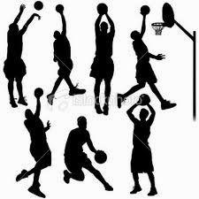
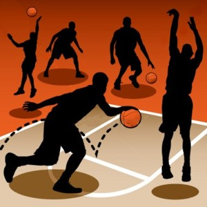
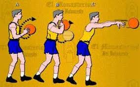

Fundamentos del básquetbol
El básquetbol tiene tres fundamentos elementales:
El bote o drible
Todo el tiempo que un jugador tenga el balón deberá botarlo contra el suelo. Este movimiento se realiza con una sola mano y de manera controlada, para que el jugador pueda, al mismo tiempo, caminar o correr. El bote no puede hacerse con ambas manos, ni puede el jugador avanzar sin hacerlo. Cuando el jugador se detiene deberá obligatoriamente hacer un pase o tendrá dos pasos para intentar un tiro al aro.
Los pases
Se llama pase a la acción de entregar el balón a un compañero, de modo efectivo y preciso, a través de una variedad de movimientos. Los contrincantes pueden intentar interrumpir un pase y adueñarse del balón. Los principales pases en básquetbol son: el pase de pecho, el pase de espalda, el pase picado (botando una vez contra el suelo), el pase por encima de la cabeza y el alley-oop (tirar cerca de la canasta para que un compañero la emboque).
Los tiros
- Tiro en suspensión. Consiste en lanzar el balón a la canasta tras elevarse en el aire.
- Tiro en estático. Consiste en lanzar el balón hacia el aro estando de pie.
- Tiro libre. Consiste en tirar el balón desde la línea de tiro libre luego de una falta y sin saltar.
- Tiro de bandeja. Consiste en lanzar el balón al aro en carrera, dando como máximo dos pasos sin botar la pelota contra el suelo.
- Tiro de mate. Consiste en dar un salto y meter el balón en el aro tocando o colgándose del aro.
- Tiro de gancho. Consiste en un tiro contra el aro, ya sea con ambas manos o con una sola haciendo con ella de gancho en el aire.
